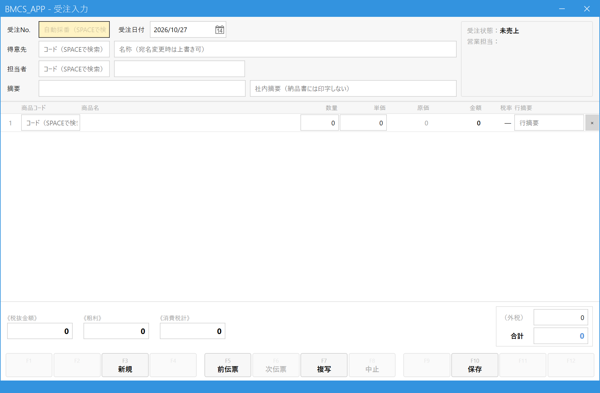
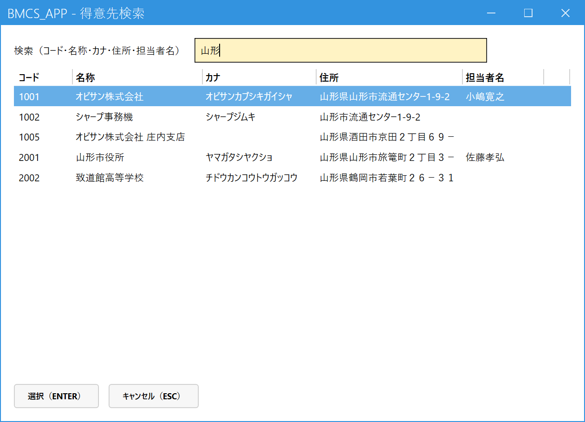
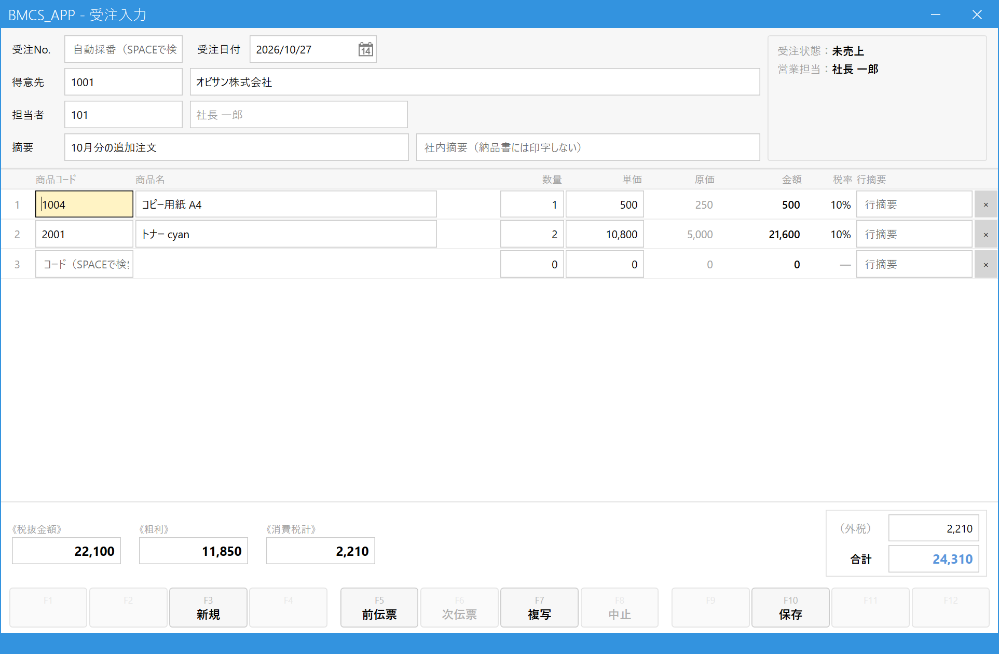

受注を登録する
こんなときに使います
お客様から注文を受けたとき、まず「仮の伝票（受注）」として記録します。
この時点では売上・請求は発生しません。商品が揃って納品するときに、売上登録で受注を呼び出して売上にします。
お客様から注文を受けたとき、まず「仮の伝票（受注）」として記録します。
この時点では売上・請求は発生しません。商品が揃って納品するときに、売上登録で受注を呼び出して売上にします。
所要時間の目安：慣れれば1件1〜2分。必要なもの：得意先コード（わからなければ画面で検索できます）と商品コード・数量。
1.受注入力画面を開く
メインメニューの「受注・売上」の中にある「受注入力」をクリックします。

- 「受注入力」をクリックする
画面の見方（最初に1回だけ眺めてください）

- 受注No.・受注日付：受注Noは保存したときに自動で付きます。日付は今日が入っています。
- 得意先：誰からの注文かを入れます。
- 担当者・摘要：自社の担当者と、伝票のメモ欄です（どちらも任意）。
- 明細：何をいくつ注文されたかを1行ずつ入れます。
- 合計：入力に合わせて自動で計算されます。
- 保存：最後にここを押します（F10 でも可）。
2.得意先を決める
得意先コードを知っているとき：得意先欄にコードを入力して Enter。得意先名が自動で入ります。
コードがわからないとき：得意先欄で Space を押すと検索画面が開きます。

- 名称・カナ・住所などの一部を入力すると、一覧が絞り込まれます。
- 一覧から選びます。入力後に Enter を1回押すと一覧へ移動、もう1回 Enter で決定します。マウスで行を選んでもかまいません。
- 「選択（Enter）」ボタンでも決定できます。やめるときは Esc。
得意先が決まると、得意先名・担当者・営業担当が自動で入ります。

- 得意先名：そのまま書き換えられます。学校のクラス名・先生名など、宛名を今回だけ変えたいときはここを直接修正します（マスタは変わりません）。
- 担当者：得意先の営業担当が入ります。この注文の担当が別の人なら、コードを入れ直します（Spaceで検索）。
- 受注状態は、新規のうちは「未売上」です。
3.商品と数量を入れる
明細の1行目、商品コード欄から入力します。コードがわかれば入力して Enter。わからなければ Space で商品検索を開きます。

- 商品名・コードの一部を入力して絞り込みます。
- 入れたい商品の行で Enter（またはダブルクリック）。右側の「選択中」に入ります。同じ操作でもう一度押すと外れます。
- 最大6件まで同時に選べます。「過去の取引履歴から」タブでは、この得意先に以前売った商品から選べます。
- 「一括転記」（Ctrl+Enter）で明細に取り込みます。
商品を選ぶと、商品名・単価・税率が自動で入り、カーソルが数量へ移ります。数量を入れて Enter で次の欄へ進みます。商品を入れると空の行が自動で1行増えるので、続けて次の商品を入力できます。

- 数量：注文された数を入れます。
- 単価：得意先ごとの取り決めがあればそれが、なければ商品の標準単価が入ります。値引き価格など、変えたいときはここを直接書き換えます。
- 金額：数量×単価で自動計算されます（入力不要）。
- 行摘要：その行だけのメモ（任意）。
- ×：その行を削除します。入れ間違えた行はここで消します。
商品名を、その伝票だけ変えたいときは、商品名の欄をマウスでクリックして書き換えられます（書き換えると末尾に「.」が付き、マスタの名称と区別できます）。
4.内容を確認して保存する
得意先・明細・合計が正しいか見直し、保存を押します。
- 摘要：伝票に残したいメモ（任意）。右隣の「社内摘要」は社内用で、納品書には印字されません。
- 合計：税込の合計です。注文内容と合っているか確認します。
- 保存 (F10)：ここを押すか F10。
保存に成功すると、画面下に「登録しました。受注No. ○○○○○○○○」と表示され、画面は次の入力のために空に戻ります。控えが必要なときは、この受注Noを書き留めておきます。
「得意先を指定してください」「明細行を1件以上入力してください」と表示されたときは、足りない項目を入力してもう一度保存します。
5.よくある操作
| やりたいこと | 操作 |
|---|---|
| 登録済みの受注を開いて見る・直す | 受注No.欄に番号を入れて Enter、または Space で一覧から選ぶ。未売上の受注だけ修正できます。直したら保存。 |
| 前に登録した受注を見たい | ツールバーの「<」「>」で前後の受注に移動します。 |
| 過去の受注と同じ内容で新しく登録したい | ツールバーの「複写」で複写元を選ぶと、内容が入った状態から新規登録できます。 |
| 注文がキャンセルになった | その受注を開いて「中止 (F8)」。中止した受注は元に戻せません（間違えたら新しく入力し直します）。売上が完了した受注は中止できません。 |
| 最初から入力し直したい | 「新規 (F3)」で画面を空にします。 |